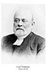

Lars Olofsson Norborg
Komminister. Blev 60 år.
| Född: | 1846-03-25 Järnklätt, Norums fs (O). [1] |
|---|
| Död: | 1907-03-24 Haga fs, Göteborg. Dödsorsak: Pneumonia acuta = Akut lunginflammation. [2] |
|---|
Noteringar
Norborg, Lars, f 25 mars 1846 i Norum, Göt, d 24 mars 1907 i Gbg, Haga. Föräldrar: hemmansägaren Olof Larsson o Anna Britta Olsdtr. Student vid latinlärov i Gbg vt 68, inskr vid LU ht 68, teor teol ex 27 sept 73, prakt teol ex 30 maj 74, allt vid LU, prästv 16 okt 74, pastoralex 15 dec 80, pastoratsadj i Gbg, Haga, 10 juli 83, komminister där 20 april 96 (tilltr 98).
G 18 juni 1884 i Malmö, S:t Petri, m Anna Helena Lovisa Wåhlin, f 20 maj 1863 i Lund, d 25 nov 1939 i Gbg, Vasa, dtr till rektor Carl Ludvig W o Anna Johanna Haqvina Meijer.
Uppvuxen i ett av gammalluthersk kallelsetrohet och schartausk väckelsefromhet präglat hem, blev N, också genom det efternamn han under skoltiden jämte en broder antog – efter födelsesocknen Norum och A Nohrborg (s 118) men med ändrad stavning för att inte ge sken av släktskap – insatt i den västsv kyrkoväckelsens sammanhang. Under sin studietid genomgick han en långvarig botkamp av pietistiskt slag. Stor betydelse för hans andliga utveckling fick en studiekamrat och dennes tidiga bortgång. Genom främst J H Hägglunds (bd 19) förkunnelse och själavård fördes N till trons visshet, och Hägglund förblev till sin död 1901 N:s själasörjare, vän och homiletiska förebild.
Jämte J N Rexius var N i sekelskiftets Gbg den ledande predikanten av H Schartaus skola. I formellt hänseende var han ingen predikokonstens förnyare. Hans tryckta predikningar präglas, med sina långa perioder, av en omständlig tyngd, som påtalades redan av samtiden. Det muntliga framförandet torde ha varit mera lättillgängligt liknande de postumt utgivna bibelförklaringarna. Det "mäktiga allvaret och den personliga glöden" präglade N:s förkunnelse, och även sexton- och sjuttonåringar stod söndag efter söndag "som tända ljus i den packade, ljudlöst lyssnande människoskaran" i Hagakyrkan (Ysander).
N:s språk kännetecknas av en utförlig, teologisk terminologi men också av sina staplade adjektiv, som vid framförandet bör ha gjort ett intryck av intensitet, inte utan känsla. Innehållsligt är hans förkunnelse en personligt tillämpande läropredikan enligt schartauskt mönster. Det eskatologiska perspektivet har en framträdande plats. En punkt till vilken han ständigt återvände var, att först när människan låter Gud göra henne till intet och väntar endast på barmhärtighet, kan Gud göra henne till något. Bakom sådana formuleringar anas N:s egen andliga erfarenhet. Samtidigt är hans framställning starkt viljebetonad, ehuru även viljan ses som en gudomlig gåva. Han betonar att, eftersom allt skall byggas på Kristus och tagas med tron, även den uslaste kan få vara med och få nåd.
Som konfirmandlärare i den då stora odelade församlingen var N både fruktad och älskad. Hans konfirmandkurs är med sina 1 756 stycken den längsta i schartausk katekestradition. Genom sin undervisning utövade han ett vidsträckt inflytande, och bland hans många konfirmander i kyrkans tjänst märks sedermera biskopen A Nygren.
Som teologisk författare gjorde sig N tidigt känd för sin lutherskt ortodoxa ståndpunkt. Redan i pastoralteserna 1880 ställde han sig, måhända omedveten om de pietistiska inslagen i sin egen teologi – bl a den detaljerade utformningen av nådens ordning och en moderat kiliasm –, kritisk till pietismen och dess följdverkningar. Det har sagts att N "åtskilde ofta icke huvudsak från bisak" (H Hägglund), och hans strängt konservativa åsikter har i hans mest omfattande teologiska arbeten fått en påfallande skärpa. De utgör egentligen debattinlägg i kyrkliga tidsfrågor men fördjupade till större undersökningar, ibland med vidlyftiga materialsamlingar (Några ord i likbränningsfrågan), ibland av ett imponerande omfång, vittnande om bredd och beläsenhet (I den kyrkliga bekännelsefrågan). Syftet med det sistnämnda arbetet var att inför bekännelsefrågans behandling vid kyrkomötet 1893 påvisa kyrkans och den kyrkliga bekännelsens väsen och dess av tidsanda och opinion oberoende särart. N var här beroende av tysk konfessionell teologi samt av G Billings (bd 4) symbolik, men hans kyrkobegrepp skilj de sig genom urgerandet av den personliga tron från den lundensiska högkyrkligheten, och N framstår närmast som biskop G D Björcks (bd 4) andlige arvtagare. Samtidigt knöt N i så hög grad den levande tron till det rätta trosinnehållet, att G Billing kraftigt reagerade (brev till N).
Genom förbindelser i Norge (biskop J C Heuch och kirkestatsrådet N Hertzberg) och Danmark (biskop H Stein) vidgades N:s vyer utöver den västsv horisonten. Efter unionsupplösningen inställde han dock sina regelbundna Norgeresor. Det äldsta kända sv belägget på ordet avkristna (från danskan) finns i N:s bok om bekännelsen (1893). Samtidigt som hans ståndpunkt var mycket konservativ innebar N:s författarskap en nyorientering av den schartauska riktningens attityd till förhållanden utanför den egna verkningskretsen och därmed en i vissa avseenden vidgad uppfattning av kallelsen. Men till s k extra åtgärder utöver förkunnelse, sakramentsförvaltning och själavård ställde han sig avvisande, emedan han ansåg dem vara utslag av ett reformert tänkesätt. Däremot välkomnade han arbetet på en värdigare liturgi. 1896 års psalmboksförslag kritiserade han (I psalmboksfrågan) för att vara mera präglat av Wallin än av reformationstiden. Trots sina ensidiga bedömningar var N den mest produktive och vittfamnande teologiske författaren i sin generation i Gbgs stift. Det tillhör bilden av N som en kyrkoväckelsens patriark att han, själv ingift i en skånsk prästsläkt, grundade en av de sista prästdynastierna i Gbgs stift. Samtliga fem söner blev präster i stiftet, och fyra döttrar gifte sig med präster.
N:s väsen präglades av ett vemodigt allvar och en viss omständlig utförlighet, men också av en tuktad humor och ett lättrört sentiment. Någon högre ställning på den kyrkliga rangskalan nådde han aldrig, men vid sin död var han föreslagen till teologie doktorsutnämning.
Anders Jarlert
sok.riksarkivet.se/Sbl/Mobil/Artikel/8179
Personhistoria
Källor
| [1] | Norum (O) C:5 (1839-1861) Bild: 12 Sida: 45, AI:8 (1845-1849) Bild: 23 Sida: 37 |
| |
| | |
| [2] | Göteborgs Haga (O) F:5 (1906-1916) 59/1907 Bild: 48 Sida: 41, AIIa:8 (1895-1911) Bild: 40 Sida: 2135 |
| |
| | |
| [3] | Göteborgs Haga (O) AIIa:8 (1895-1911) Bild: 40 Sida: 2135 |
| |
| | |
| [4] | Askum (O) AIIa:5 (1920-1930) Bild: 2330 Sida: 224 |
| |
|
|  |
| Komminister Lars Norborg |
|
{kind=link}